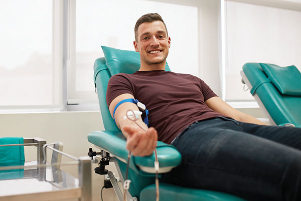

Become a LifeLine to save lives.
By leveraging cutting-edge technology, we aim to streamline operations, reduce delays, and ultimately save lives. Our platform ensures that donors can easily find blood donation opportunities, while blood banks can efficiently manage their inventories and donor relationships.
Join us in our mission to create a healthier future, one donation at a time.